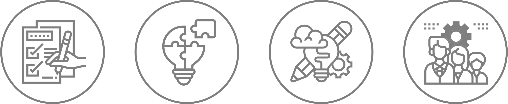
2024.10.30.
모바일 TV 이용자 로그데이터 기반
콘텐츠 추천 서비스
2차 프로젝트
팀명 : DATA로팀원 : 김승훈, 곽현철, 조진형, 양현우, 서정임
서비스 개발 개요
Ⅰ
서비스 인프라 구축
Ⅱ
분석 시스템 진행 방향
Ⅲ
Contents
서비스 개발 목적 및 필요성
서비스 개발 프로세스
업무분장 및 추진 일정
개발 환경 및 기술
서비스 개발 개요
Ⅰ
서비스 개발 목적 및 필요성
01
① 서비스 개발 목적
개인화된 시청 경험 제공
- 사용자의 모바일 TV 이용 로그를 기반으로 각 개인의 취향과 선호도에 맞는 콘텐츠를 추천함으로써 사용자 경험을 극대화
사용자 참여와 만족 증대
- 정확하고 적합한 콘텐츠 제공으로 인한 사용자의 서비스 만족도 향상
서비스 차별화 및 경쟁력 강화
- 콘텐츠 소비 패턴을 분석하여 사용자에게 최적화된 추천으로 차별화 및 경쟁력 증가
② 서비스 개발 필요성
모바일 TV시청 환경 변화
- 모바일 디바이스의 보급과 함께 TV 시청방식이 기존 방송 시간표에 따른 시청에서 벗어나, 개인화된 온디맨드(On-Demand) 콘텐츠 소비가 주류를 이루고 있음
방대한 콘텐츠의 효율적 탐색 필요
- 다양한 콘텐츠가 매일 방대한 양으로 생산되고 있지만, 사용자가 원하는 콘텐츠 검색의 어려움이 있음. 사용자에게 적합한 콘텐츠 추천서비스의 필요성 대두
③ 모바일 시장 대상 근거
2023 방송매체 이용행태 조사
- 높은 스마트폰 보유율(99%), 스마트폰 이용빈도 상승 및 보급률 대비 낮은 TV 시청 빈도
- 야외 활동과 OTT 이용 증가로 인해 주중·주말TV 이용 시간은 2시간 36분에서 2시간 29분으로 전년 대비 감소하였으며, 스마트폰의 이용시간은 1시간 52분에 서 2시간으로 전년 대비 증가
- OTT등 콘텐츠 서비스 이용 시 스마트폰을 86.3%로 가장 많이 이용
모바일 TV 이용자 로그데이터 기반 콘텐츠 추천 서비스
개인화된 콘텐츠 추천 모바일 TV 시청 경험 극대화 및 사용자 만족도 향상
서비스 개발 프로세스
02
01
인프라구축
02
분석
시스템
구축
04
서비스
운영
콘텐츠를 이용하는 모바일/웹사이트
Python Flask
HTML
데이터 수집
이용 로그 수집
사용자 피드백 반영 개선
모델 평가
개별, 일관성 검증
사용자 콘텐츠 평점 반영
데이터 파이프라인
API Gateway
kinesis
Glue
S3
데이터 처리
Glue ETL 과정
분석에 필요한 테이블 변환
Python Surprise(ML)
개인화 콘텐츠 추천 서비스 제공
사용자/아이템 기반 협업 필터링
서비스 배포 및 운영
서비스 사용자 대상 만족도 및 개선사항 도출
: 프로젝트 범위
이용자 데이터 테이블 관리 DB 서버
MySql 서버
03
추천
시스템
개발
데이터 분석
기초 통계 분석(ex. 빈도분석)
상관분석
시각화
사용자 정보
콘텐츠 장르별
실시간 콘텐츠순위
피드백 기반 학습
추가 이용 데이터 수집
최적화 및 개선
업무 분장
추진 일정
업무 분장 및 추진 일정
03
팀장
김승훈
서정임
개발 기획 및 총괄 책임
데이터 분석 & ML
DB 관리
데이터 분석 & 대시보드 구성
AWS 인프라 기획 및 구축
AWS 인프라 유지&보수
AWS 인프라 구축
AWS 인프라 유지&보수
Front – End 구축
데이터 수집 프로세스 기획&분석
구분
8월
9월
10월
11월
12월
1w
2w
3w
4w
1w
2w
3w
4w
1w
2w
3w
4w
1w
2w
3w
4w
1w
2w
3w
4w
개발
기획
개발기획/진행 협의
개발 방향 수립
개발
준비
AWS 파이프라인
준비
DB 구성 기획
(Table 정의)
개발
진행
웹 프론트 개발
AWS 파이프라인
구성
DB 구성
추천 시스템 개발
양현우
조진형
곽현철
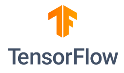
개발 환경 및 기술
04
개발 및 디버깅 툴
개발 환경
학습모델 및 분석도구
주 개발 언어
데이터 베이스
웹 개발 언어
서비스 인프라 구축
Ⅱ
인프라 개요
인프라 구축
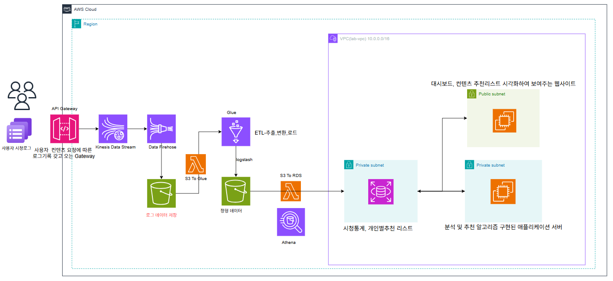
AWS 클라우드를 이용한 수집, 정제, 분석, 시각화 파이프라인 구축
인프라 개요
01
Pipe-Line Architecture
1
API post 요청 후kinesis와 firehose를 거쳐 S3에 로그데이터 실시간 저장
2
glue가 S3 데이터를 크롤링하여 내장 DB에 저장하는 Lambda 함수 실행
3
ETL 처리 후정형 데이터 S3에 저장
4
Lambda 트리거를 발생시켜RDS 테이블에 저장
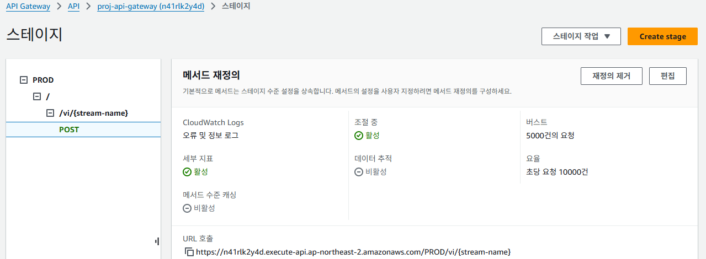
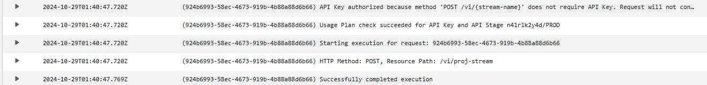
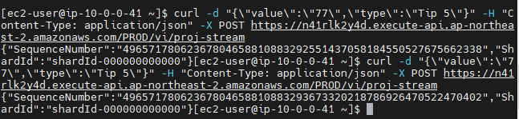
API post 요청으로 로그데이터 Kinesis와 firehose를 통해 S3에 저장
인프라 구축
02
Curl 명령 데이터 전송 테스트
Curl 명령으로 API post 요청 로그
API 배포
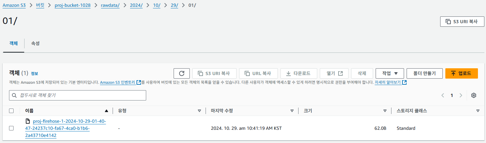
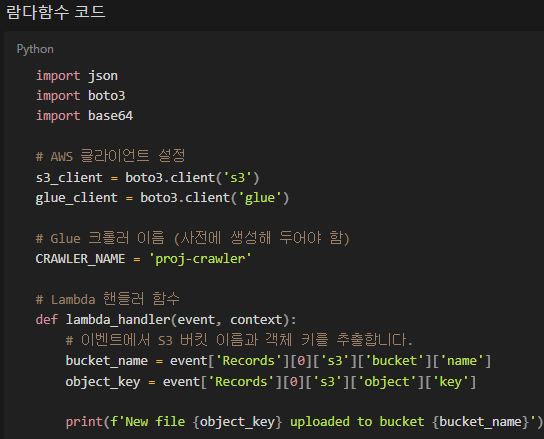
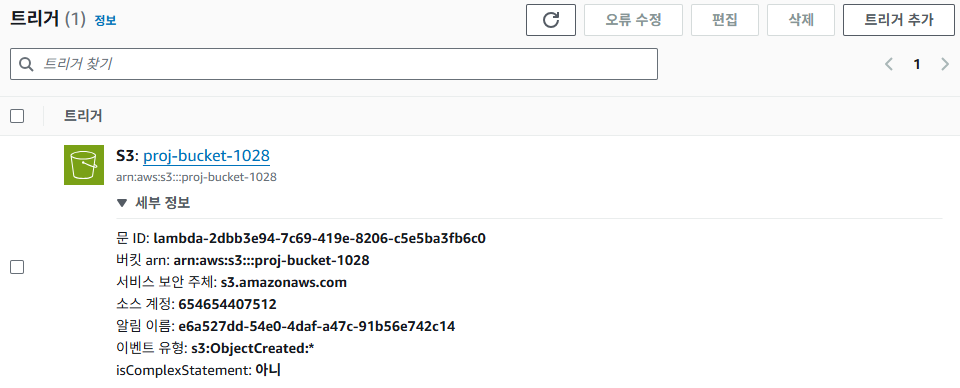
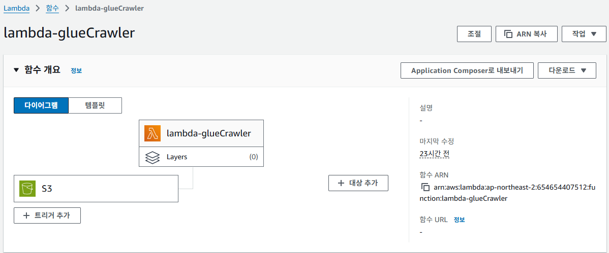
Kinesis -firehose 생성
Kinesis-firehose를 통해 S3에 데이터 저장
S3에 데이터 쌓인 후 Glue가 크롤링하여 Glue DB에 저장하는 Lambda 함수 실행
인프라 구축
02
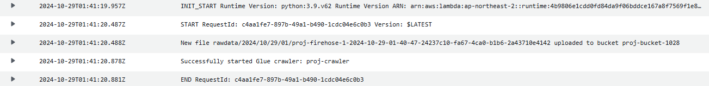
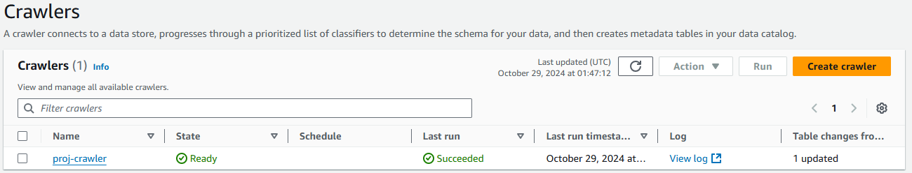
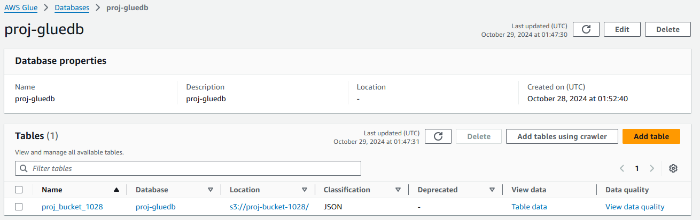
S3 데이터 Glue crawler를 이용해 Glue DB에 저장
CloudWatch 크롤링 로그데이터
Glue db에서 카탈로그 생성 후 스키마에 맞게 데이터 저장
인프라 구축
02
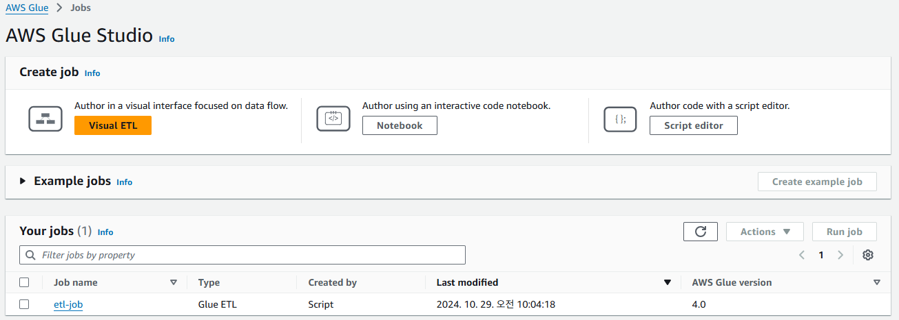
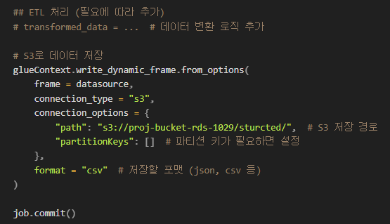
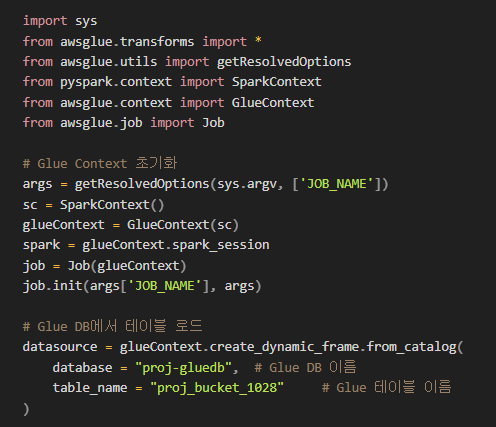
Glue 과정을 거친 후 S3에 다시 저장
S3에서 받은 데이터를 ETL과정을 거쳐 S3에 다시 저장
Glue ETL 스크립트
인프라 구축
02
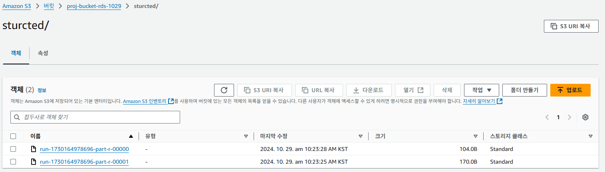
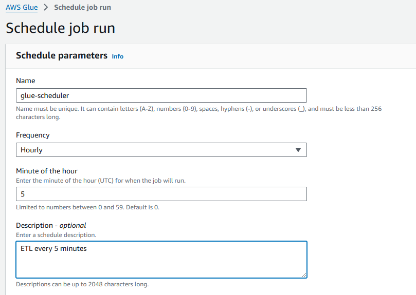
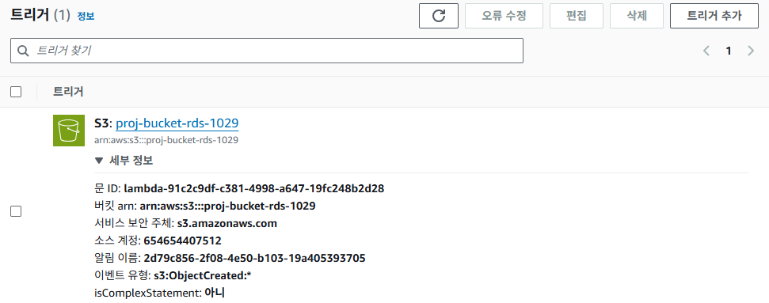
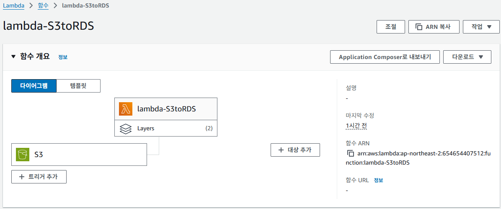
Glue 스케쥴링 설정(5분마다 ETL설정)
ETL과정을 거쳐 S3 버킷에 저장
ETL 과정을 거친 S3에 정형데이터 Lambda함수로 RDS 인스턴스에 저장
Lambda함수 및 트리거 생성
인프라 구축
02
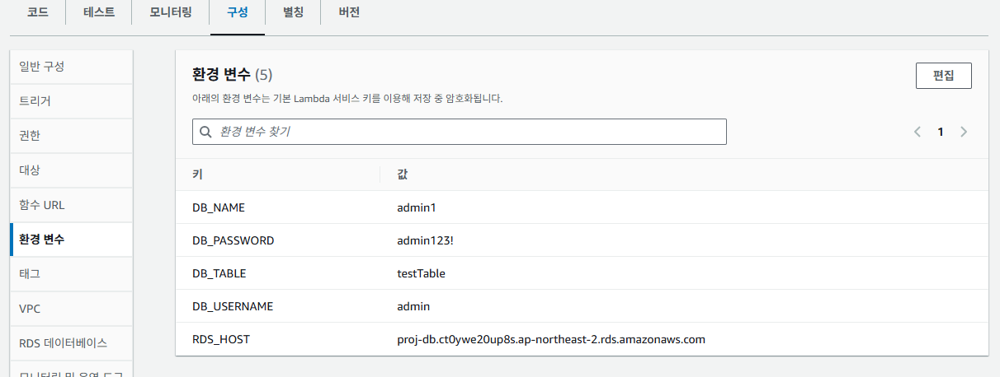
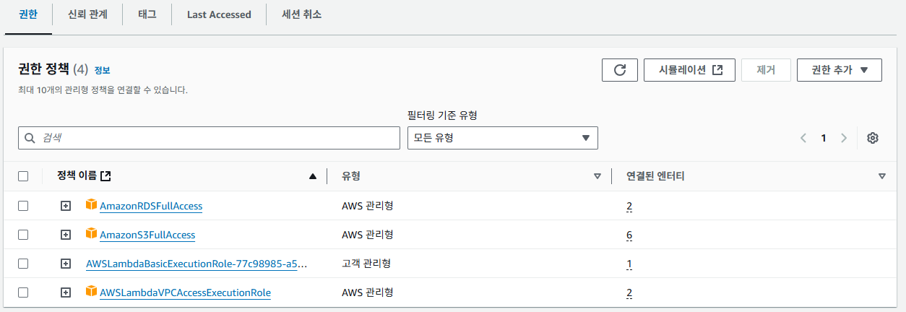
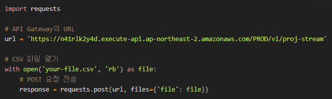
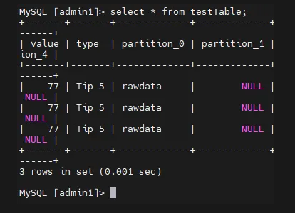
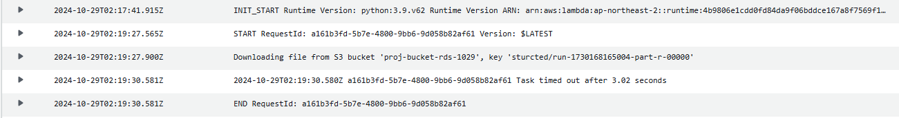
Lambda 권한 설정
Lambda함수 환경 변수를 RDS 계정과 테이블로 설정
Lambda 함수 로그
RDS 테이블 저장 확인
CSV 샘플데이터 API 다운로드
인프라 구축
02
분석 시스템 진행방향
Ⅲ
분석 시스템 개요
데이터 정형화
콘텐츠 추천 ML 모델
웹 페이지 구성
시연 영상
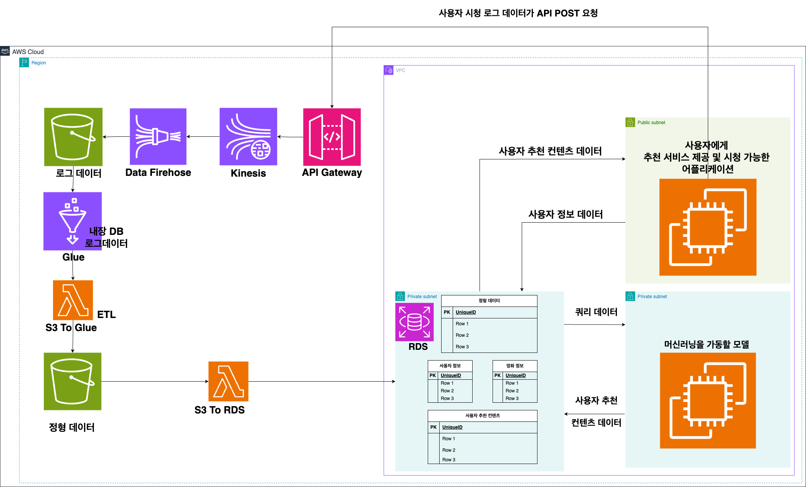
분석 시스템 개요
01
데이터 분석 세부 Flow - Chart
1
이용자 로그데이터수집
2
로그데이터 정형화 후
ID, 콘텐츠 정보 매칭
3
데이터 분석 및
머신러닝
4
대시보드 개인화 통계 &
추천 콘텐츠 제시
분석 시스템 진행 방향
데이터 정형화
02
콘텐츠코드
제목
장르(대)
장르(중)
시청등급
감독
…
1001
롱레그스
영화
공포/스릴러
전체
감독1
…
1002
아파트
드라마
코미디
12세
감독2
1003
지옥 시즌2
드라마
판타지/스릴러
15세
감독3
1004
헌터 킬러
영화
액션
18세
감독4
…
콘텐츠 정보 Table
ID
이름
생년월일
지역
주관심장르(대)
…
Id0001
김승훈
19940523
경기
영화
…
Id0002
조진형
19980425
서울
드라마
Id0003
양현우
20001218
부산
시리즈
Id0004
서정임
20010508
경북
영화
…
ID 정보 Table
log
127.0.0.1 - - [30/Oct/2024 11:28:49] "GET /movie_details/1 HTTP/1.1" 200 - …
127.0.0.1 - - [30/Oct/2024 11:28:51] "GET /recommendations HTTP/1.1" 200 - …
…
로그 요청
ID
성별
연령
지역
…
콘텐츠코드
제목
…
시청시간대
시청시간(분)
…
id1001
남
영화
경기
…
1003
지옥 시즌2
…
오전
140
…
…
정형 데이터
ID
콘텐츠코드
시청시작시간
시청시간(분)
id0001
1003
30/Oct/2024 11:11:09
140
…
시청 기록 데이터
로그 수집 후 시청 기록 데이터 분리
ID 기본정보, 콘텐츠 정보를 각각의 Table에서 매치
최종 정형 데이터 생성
1
2
3
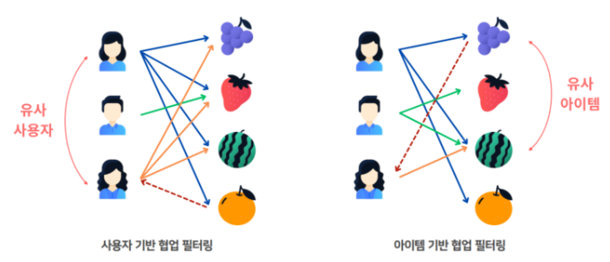
ML 모델은 Python Surprise의 협업필터링 알고리즘 사용
콘텐츠 추천 ML 모델(Python Surprise)
03
Python Surprise 라이브러리
추천 시스템 구축용 파이썬 라이브러리
데이터셋 전처리 자동 수행으로 편리한 사용 가능
Ex) 협업필터링, 행렬 분해
01
협업 필터링
제품 또는 사용자간 유사도를 기반으로 제품을 추천하는 알고리즘
사용자 기반 협업 필터링
- 특정 사용자와 유사한 다른 사용자를 찾아 좋아하는 아이템 추천
3. 아이템 기반 협업 필터링
- 특정 아이템을 선호하는 사용자에게 유사도 높은 아이템 추천
02
협업 필터링 알고리즘
※ 3차 프로젝트 진행
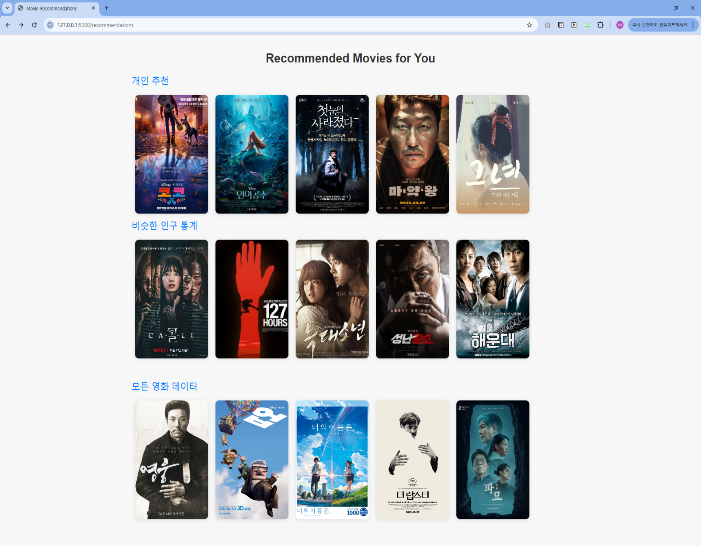
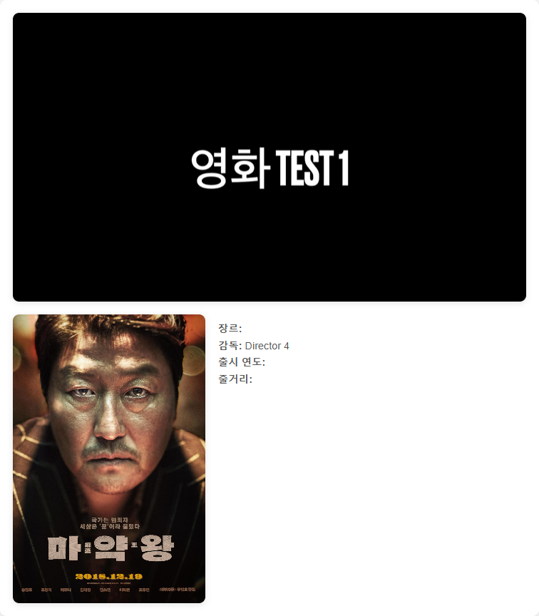
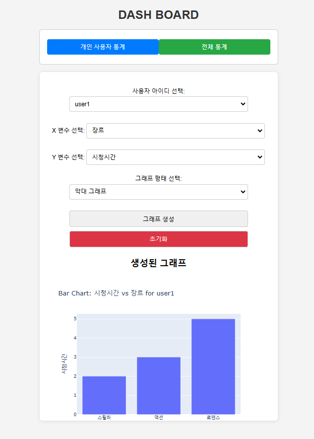
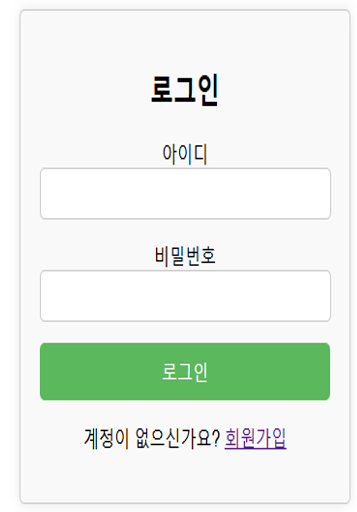
웹 페이지 구성
04
사용자가 보게 되는 웹 페이지(콘텐츠 페이지, 대시보드)
로그인 화면
콘텐츠 페이지 메인 화면
개인형 추천 콘텐츠 제공
대시보드 화면
로그데이터 수집
시연 영상
05
시연 영상
감사합니다